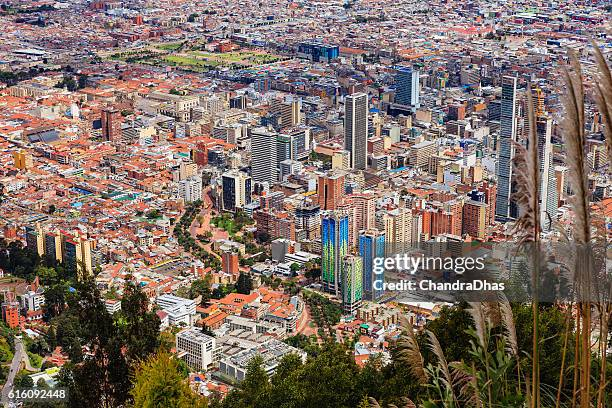

🏙️ Bogotá: Historia, Clima y Vida
Cómo ha cambiado nuestra ciudad y cómo cuidarla

🌾 Así era la sabana antes
Hace cientos de años, donde hoy vemos calles y edificios, había un inmenso valle verde rodeado de montañas. Los pueblos originarios que vivían aquí cuidaban la tierra, respetaban los ciclos de lluvia y sequía y sabían leer las señales del cielo. La sabana estaba llena de pajonales, lagunas y bosques que guardaban el agua y regulaban el clima.
Quienes vivieron en Bogotá hace 70 o 80 años recuerdan un clima distinto: los días eran frescos, las lluvias llegaban con cierta frecuencia y se sabía en qué mes llovería más. Las heladas en el campo eran comunes pero predecibles, y los ríos que cruzaban la ciudad corrían limpios y caudalosos.
📜 Cómo ha cambiado la ciudad
Bogotá ha crecido mucho. De ser una ciudad pequeña rodeada de campos verdes pasó a ser una gran urbe con millones de personas. Ese crecimiento ha traído cambios importantes en el clima local:
- Donde antes había árboles y tierra, ahora hay cemento y asfalto que retienen el calor del sol
- Las montañas que rodean la ciudad han perdido parte de su vegetación, lo que afecta la entrada de lluvias frescas
- Los humedales, que funcionaban como esponjas naturales de agua, han disminuido en tamaño y cantidad
- Los vehículos y las fábricas liberan gases que calientan el aire de la ciudad
🌤️ El clima de hoy
Bogotá sigue siendo una ciudad fresca, pero hoy notamos cambios que antes no eran tan evidentes. Las personas mayores lo confirman: "antes llovía más parejo", dicen. Los cambios que vivimos son estos:
🌡️ Más calor
Las temperaturas máximas han subido varios grados en las últimas décadas. Los días calurosos son más frecuentes, especialmente cuando El Niño está activo.
🌧️ Lluvias impredecibles
A veces llueve muchísimo en pocas horas y luego pasan semanas sin una gota. Los periodos secos se han vuelto más largos y notables.
💧 Menos agua disponible
El agua que llega a Bogotá viene de los páramos, especialmente de Chingaza. Cuando llueve menos allá, los embalses bajan y sentimos la escasez aquí.
🌫️ Aire que necesita cuidado
Los días secos y ventosos se acumula polvo en el aire. Caminar, usar la bicicleta y no quemar basura ayuda a que respiremos mejor.
⛰️ Los páramos: nuestra fuente de vida
Bogotá no tiene ríos grandes que la crucen, pero tiene algo más valioso: los páramos. Son tierras altas, frías y cubiertas de plantas especiales que atrapan el agua de la lluvia y la niebla, la guardan en el suelo y la dejan salir despacio durante todo el año. Sin páramos no habría agua en la ciudad.

El Niño pone a prueba estos ecosistemas: la lluvia disminuye, la niebla aparece menos y el agua guardada se reduce. Por eso proteger los páramos no es solo cuidar "un lugar lejano": es cuidar el agua que sale de la llave de tu casa. No se debe permitir la tala, la quema ni la agricultura en zonas que son frágiles y que nos sostienen a todos.
🌳 La ciudad que queremos
El cambio no es inevitable. Podemos cuidar Bogotá con acciones que parecen pequeñas pero que suman mucho:
- Sembrar y proteger árboles: cada árbol da sombra, enfría el aire y ayuda a que la lluvia se filtre en el suelo. En el parque, en el colegio, en el patio de la casa: todo árbol cuenta.
- Respetar los humedales: son pulmones y depósitos de agua naturales. No se deben llenar ni contaminar. Cuidarlos es cuidar el clima de la ciudad.
- Ahorrar agua todos los días: cerrar la llave, revisar fugas, reutilizar el agua. En Bogotá, cada gota cuenta.
- Usar menos el carro: caminar, usar la bicicleta o el transporte público reduce los gases que calientan la ciudad.
- No quemar nada: las quemas contaminan el aire, dañan la salud y pueden extenderse a los bosques de las montañas.
✨ Bogotá es nuestra
La ciudad que heredamos no es perfecta, pero es nuestra. El clima que tenemos hoy es el resultado de lo que hicimos ayer; el clima que tendremos mañana depende de lo que hagamos hoy. No necesitamos ser grandes científicos para cuidar Bogotá: basta con quererla, conocerla y respetarla.
La sabana que nos vio nacer y crecer merece que la defendamos. Cada acción que haces —por pequeña que sea— ayuda a que esta ciudad siga siendo un lugar donde valga la pena vivir.
"Quien ama su ciudad, la cuida. Quien la cuida, la protege para siempre."